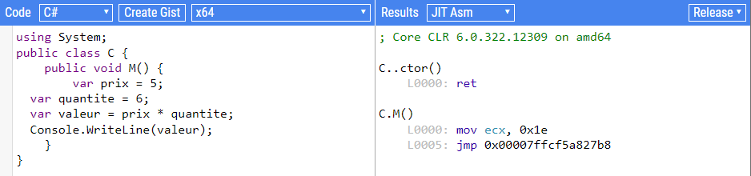

Comment ça marche ?
Découvre les secrets de l'intérieur d'un ordinateur !
L'intérieur d'un ordinateur
Un ordinateur, ça peut sembler très compliqué vu de l'extérieur. Mais en réalité, il est construit avec seulement 3 éléments principaux.
🗂️ La mémoire de stockage
C'est comme un cahier : plus il a de pages, plus on peut y écrire de choses. C'est là où sont rangées les instructions du programme et les résultats des calculs.
📝 La mémoire de travail (RAM)
C'est comme ta feuille de brouillon quand tu fais des maths. Tu y poses tes calculs, et tu mets le résultat final dans le cahier. Elle s'efface dès qu'on coupe le courant !
⏰ L'horloge
Elle donne le rythme à tout l'ordinateur, comme un chef d'orchestre. Plus elle est rapide, plus l'ordinateur peut faire des choses vite.
🔢 Les bits et les octets
Tu te souviens des zéros et des uns ? On appelle chaque zéro ou chaque un un bit.
Le Bit
L'Octet
Quand on regroupe 8 bits ensemble, on obtient un octet. Avec un octet on peut représenter 256 valeurs différentes (de 0 à 255). C'est la brique de base de toute l'informatique !
= 1 Octet
📚 Vocabulaire à retenir
Bit
Un 0 ou un 1
Octet
8 bits regroupés
RAM
La mémoire de travail (Random Access Memory)
Registre
L'espace de calcul à l'intérieur du processeur
Microprocesseur
Le cerveau de l'ordinateur, il exécute les instructions
🔬 Si tu veux voir à quoi ressemble le code assembleur
Réservé aux grands curieux, tu peux voir à quoi ressemble le code assembleur généré depuis du C# sur ce site.

👆 Clique sur l'image pour ouvrir SharpLab (s'ouvre dans un nouvel onglet)
🤖 Comment programmer un ordinateur ?
La personne qui fabrique le microprocesseur choisit les instructions qu'il comprend. Par exemple, elle peut décider que le code
00000001signifie "additionne le registre A et le registre B, mets le résultat dans le registre C".Comme tu peux le voir, travailler directement avec des zéros et des uns, c'est vraiment compliqué ! Alors les ingénieurs ont inventé des langages de programmation — des façons d'écrire des instructions beaucoup plus lisibles pour les humains.
✏️ Ton premier exemple de code
Voilà ce que fait chaque ligne :
On réserve un espace mémoire appelé
prixet on y range la valeur 5.On réserve un autre espace appelé
quantiteet on y met 6.On crée un espace
valeuret on y met le résultat de prix × quantite.On affiche à l'écran ce que contient
valeur.Résultat : l'écran affiche 30. Simple, non ?
🎮 À toi de jouer !
Clique sur ce lien pour ouvrir cet exemple en ligne. Appuie sur le bouton Run pour lancer le programme. Tu dois voir apparaître 30.
Maintenant, change la quantité pour mettre 7 et appuie à nouveau sur Run. Est-ce que tu obtiens bien 35 ?
Essayer le code en ligne⚡ Qu'est-ce que la compilation ?
Quand tu appuies sur "Run", un programme spécial appelé compilateur lit ton code et le transforme en instructions binaires (des 0 et des 1) que le processeur peut exécuter. C'est un traducteur automatique entre le langage humain et le langage machine !
📖 Définition
Transformer un texte de code en instructions binaires s'appelle compiler ou faire une compilation.